I design and build mobile apps that feel calm, clear, and ready for real users —
for founders who need an MVP, and teams who already have a backend waiting for a front door.
A note before the work
Built for founders who want clarity, not jargon.
If you have an idea for an app — or an API that needs a beautiful, reliable mobile layer —
this document is for you. It is not a rate sheet. It is a careful look at three production
apps I have shipped, and the way I think about building the next one with you.
Most founders I work with are not engineers. You care about whether people can open the app,
find what they need, and trust it enough to come back. My job is to translate that into a
React Native product that feels intentional on both iOS and Android — without drowning you
in technical fog.
Startups that already have a backend are often stuck at the last mile: the mobile experience.
I connect cleanly to your existing APIs, design the flows your users actually take, and ship
something you can put in a store — or hand to a pilot group — with confidence.
Plan deep. Code smart. Evolve constantly.
That is the short version of how I work. We take time to understand the problem before we
write a single screen. We choose simple architecture over clever shortcuts. And we leave
room for the product to grow after launch — because the first version is rarely the last.
· · ·
How we work together
A calm path from idea to App Store.
No mystery process. Four stages, plain language, shared visibility at every step.
You always know what is being built and why.
01
Clarify
We map who the app is for, what success looks like on day one, and what can wait.
Screens, flows, and edge cases — sketched before they become expensive surprises.
02
Build
React Native for iOS and Android from one codebase. Thoughtful UI, steady performance,
and APIs wired the way your backend expects — or helped into shape if it is still forming.
03
Ship
Store-ready builds, testing on real devices, and a release you can show investors,
customers, or your team without apology.
04
Iterate
After launch, we listen. Small improvements compound. I stay available to refine,
extend, and keep the product healthy as usage grows.
Case study 01
RedLife
A life-critical community app connecting blood donors, recipients, and blood banks across Pakistan.
Role Full-stack mobile developerPlatform iOS & AndroidFocus Reliability under urgency
The problem
When someone needs blood, minutes matter. RedLife had to feel fast and trustworthy —
not like a brochure, and not like a fragile prototype. Donors, recipients, and blood banks
needed one place to find each other without friction, especially in moments of stress.
What I built
I architected a cross-platform React Native app with a clear focus on performance and
reliability, backed by a Laravel API and MySQL. The work spans mobile and web surfaces
that share the same source of truth — so emergency access stays consistent wherever
someone reaches for help.
The design priority was calm clarity: large tap targets, readable hierarchy, and flows
that do not ask a panicked user to hunt for the next step. Real-time concerns were treated
as product requirements, not afterthoughts.
React Native
Laravel
MySQL
Real-time
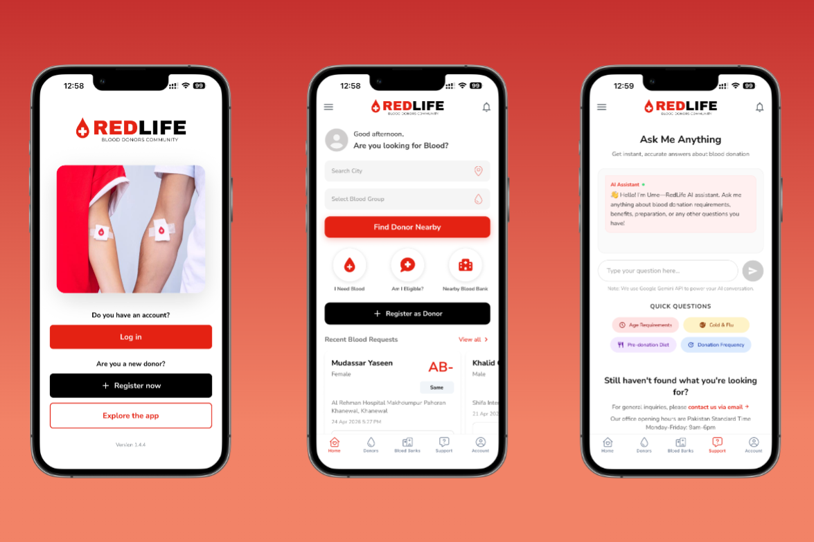
RedLife — primary product surface
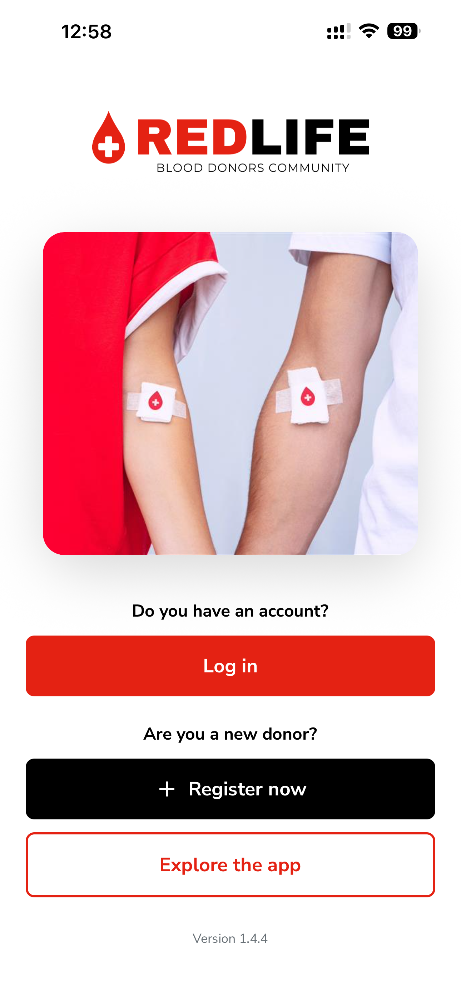
On-device screen
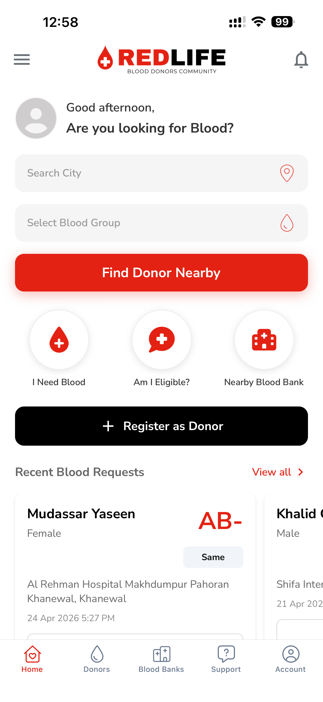
On-device screen
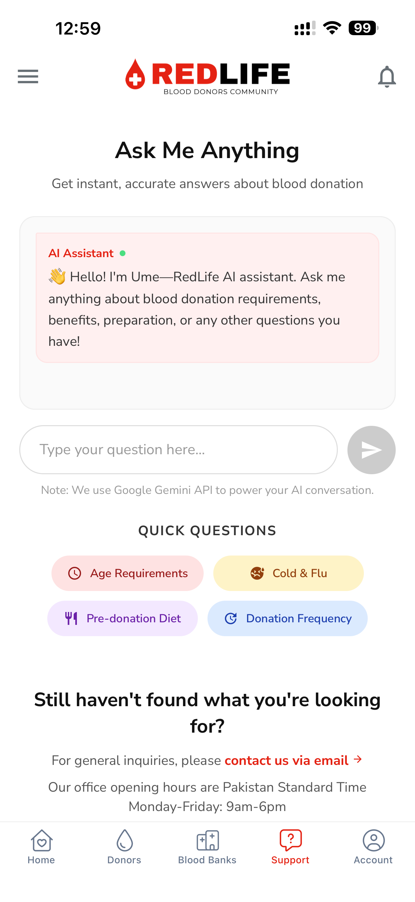
On-device screen
Case study 02
Markaz Agent
A property and agency management app that keeps listings, inquiries, and day-to-day operations in one place.
Role React Native / web developerClient Markaz.pkFocus High-traffic operations
The problem
Real-estate agencies juggle listings, conversations, and admin work across tools that
rarely talk to each other. Agents needed a mobile companion that felt as capable as the
desk — without becoming a maze of menus.
What I built
I build and maintain a high-traffic React Native app with strong database connectivity
and a performance-first mindset. Alongside the mobile experience, I lead feature work
inside a complex admin dashboard used by content managers — so the field and the office
stay aligned.
For founders watching this case: Markaz Agent is what “serious operations software”
looks like when it still has to feel approachable on a phone. The craft is in the quiet
details — loading states, list density, inquiry flow — not in loud decoration.
React Native
React
MySQL
Admin dashboard
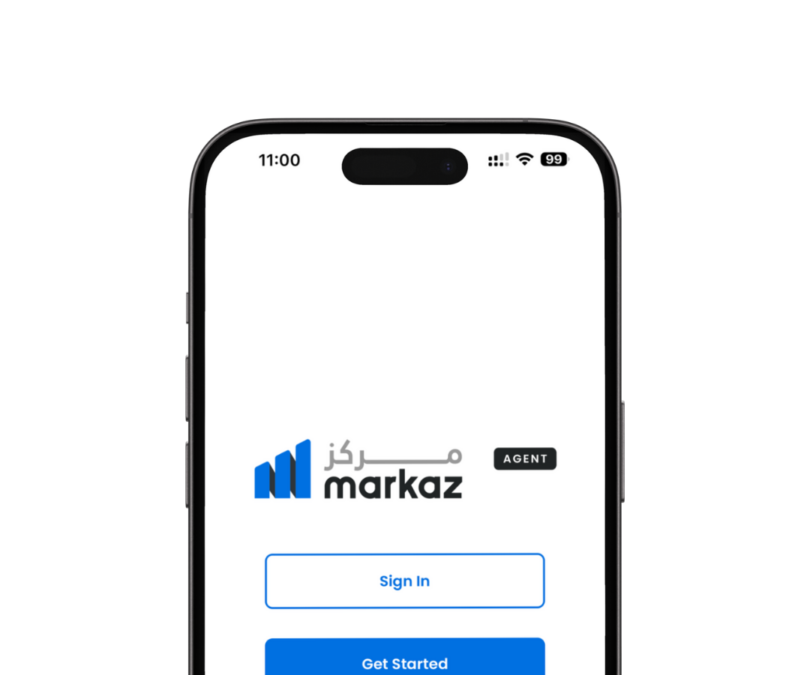
Markaz Agent — primary product surface
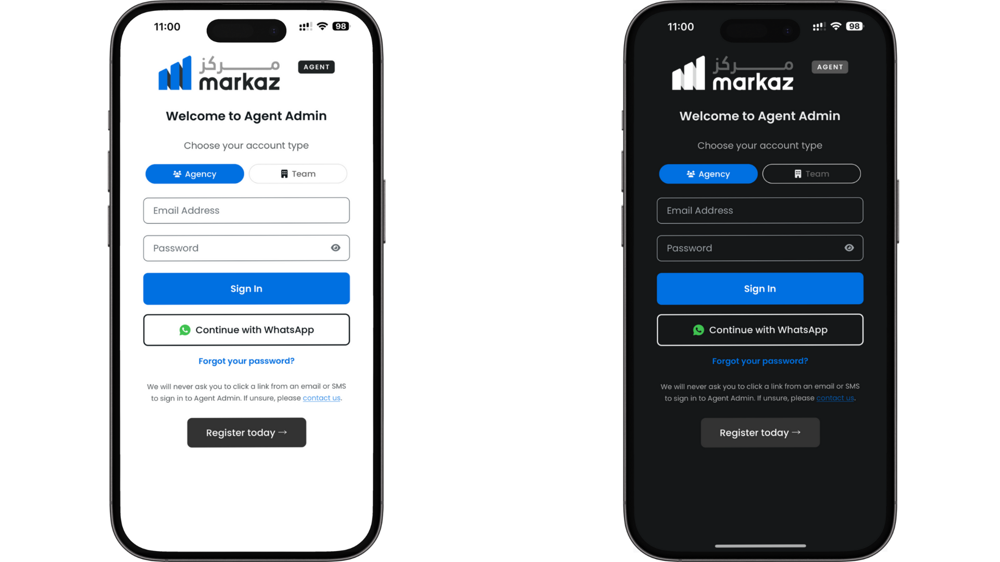
Screen detail
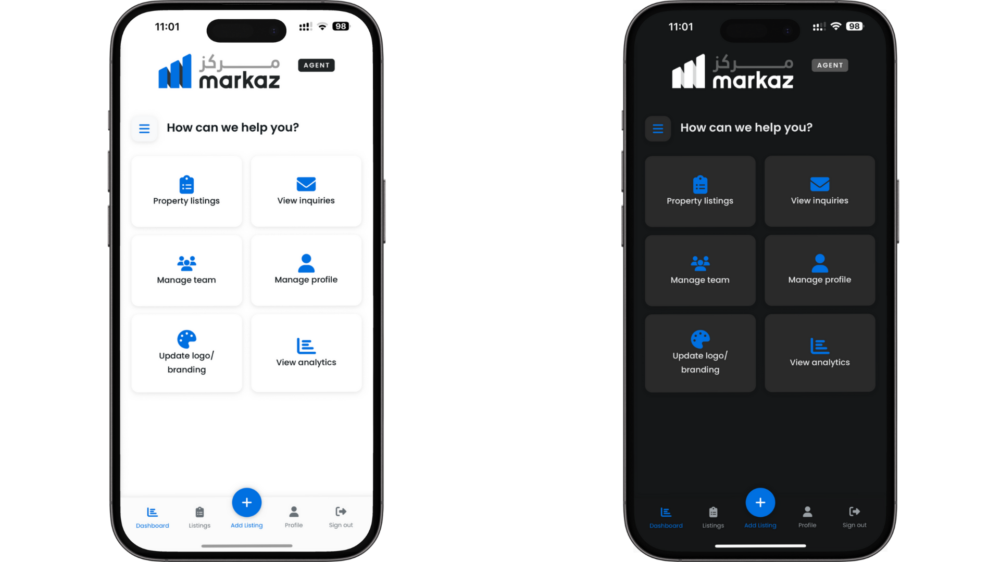
Screen detail
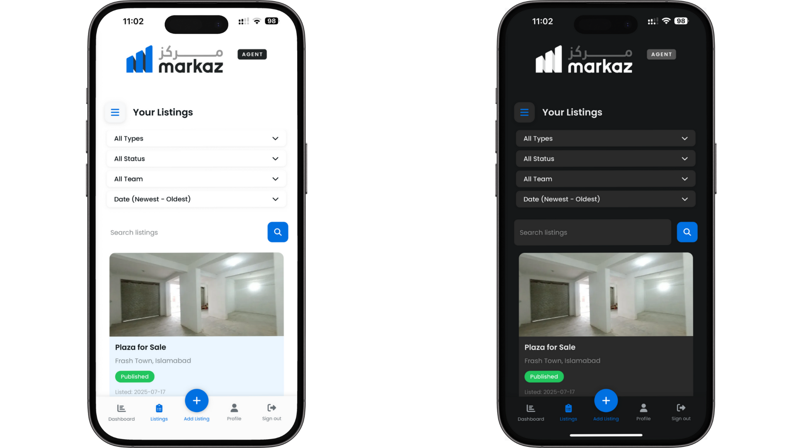
Screen detail
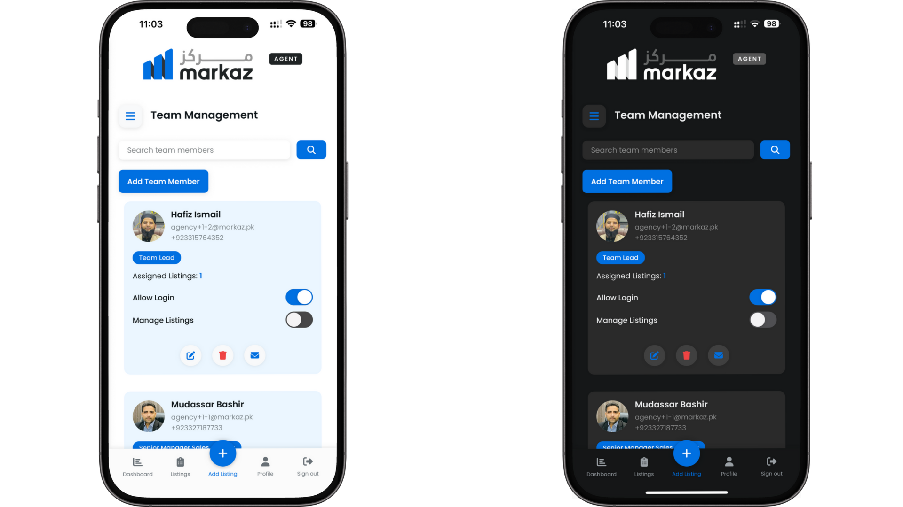
Screen detail
Case study 03
PK Domains
A polished, minimal marketplace for buying and selling .pk domains — built as a first-of-its-kind mobile experience in Pakistan.
Role Mobile product builderCategory MarketplaceFocus Trust & simplicity
The problem
Domain marketplaces fail when they feel opaque. Buyers need to believe a listing is real;
sellers need a path that does not feel like paperwork. On mobile, that trust has to arrive
in the first few screens — or the session ends.
What I built
PK Domains is a React Native marketplace with a deliberately quiet visual language:
generous spacing, restrained colour, and flows that favour scanning over spectacle.
Underneath, MySQL-backed data keeps inventory and transactions organised for a category
that had little mobile precedent locally.
This is the kind of MVP I enjoy most — a clear niche, a real user need, and enough polish
that the first impression matches the ambition of the idea.
React Native
MySQL
Marketplace
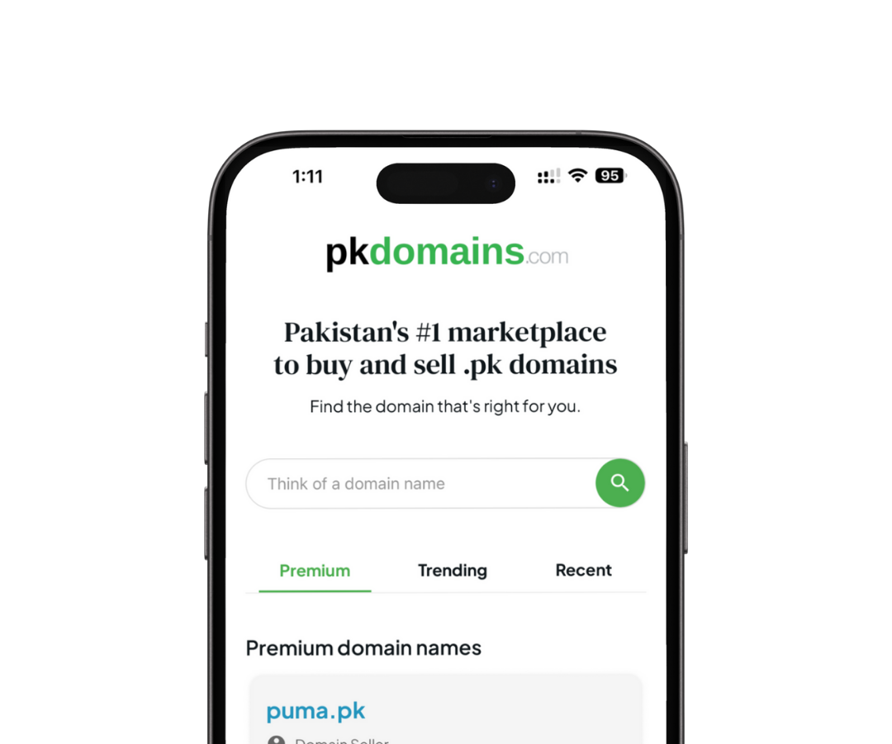
PK Domains — primary product surface
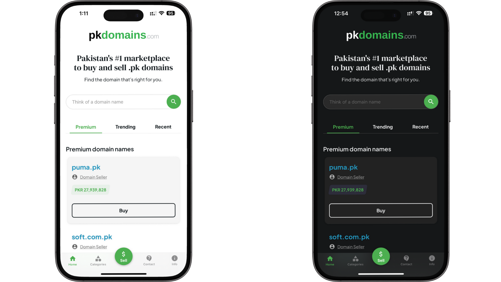
Screen detail
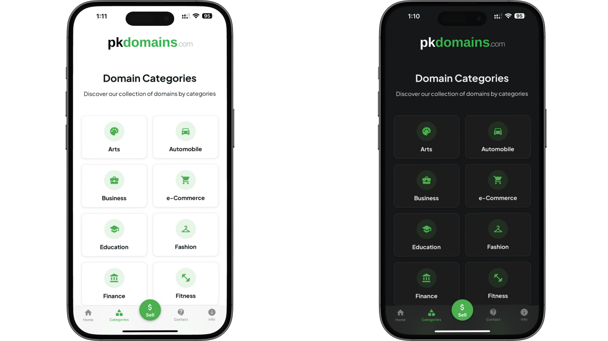
Screen detail
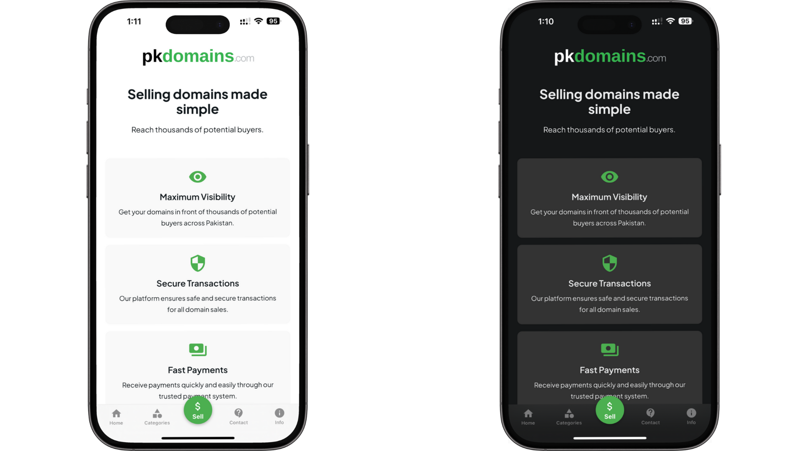
Screen detail
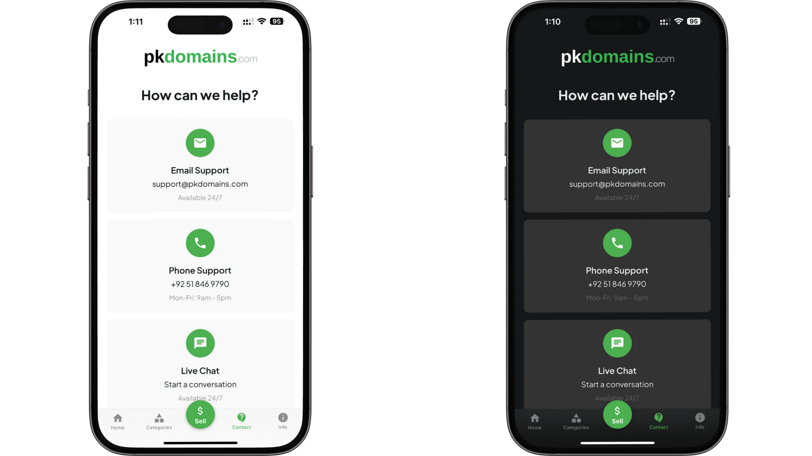
Screen detail
Stack & craft
Tools chosen for shipping, not showing off.
You do not need to memorise this list. Think of it as the kitchen I cook in —
proven ingredients, selected so your product stays maintainable after launch.
Languages
TypeScript · JavaScript · PHP
Mobile & UI
React Native · React · Next.js
Backend
Node.js · Laravel · Express
Data
MySQL · PostgreSQL
Craft
Vite · Tailwind · Figma · Git
Ship
Vercel · cPanel · Docker
If your backend already exists, I meet it where it is. If it does not, I can help shape
a lean API that your app — and your future web surface — can grow on.
Field notes
Where the craft has been practiced.
Recent work, stated plainly. These are the teams and products that shaped how I show up
for freelance partners today.
Jan 2026 — Present · Part time
RedLife
Full-stack mobile developer
Architecting a cross-platform React Native app for iOS and Android with a focus on performance and reliability.
Maintaining and extending a Laravel backend so mobile and web stay in sync through scalable APIs.
Feb 2025 — Present · Part time
Markaz.pk
React Native app / web developer
Building and maintaining a high-traffic React Native app with strong database connectivity.
Leading feature development inside a complex admin dashboard for content managers.
Oct 2023 — Apr 2024 · Internship
GRIPHENS Technologies
Full stack developer
Shipped production websites in WordPress, Webflow, and React from real UI/UX specs.
Handled back-end work and third-party API integrations through end-to-end client delivery.
Currently studying Software Engineering at SZABIST · Based in Islamabad, open to freelance partnerships.
Next step
Ready when you are.
If one of these case studies feels close to what you need — an MVP, a marketplace,
an ops companion, a life-critical flow — tell me about your idea. I read every message.